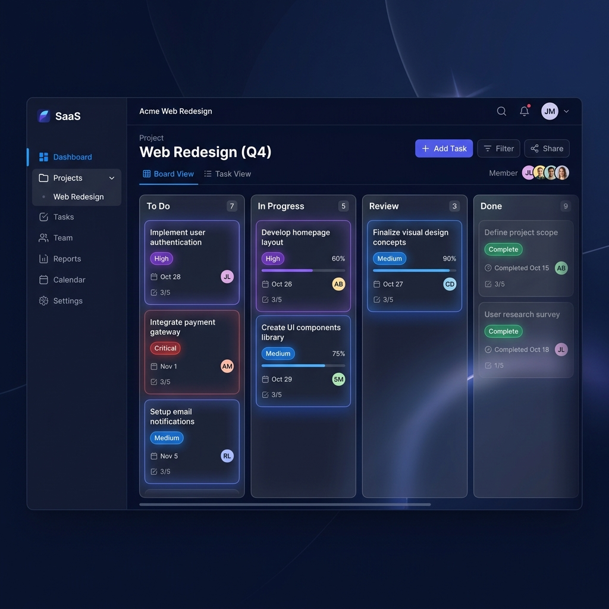

TaskFlow is a next-generation project management platform that combines intuitive Kanban workflows with ML-powered recommendations, bottleneck detection, and wellness monitoring.

Core Features
From Kanban boards to AI insights — one platform to manage it all.
Drag-and-drop task management with customizable columns, priority tags, and real-time status tracking across your entire project.
SetFit-powered priority classification and skill-based task assignment that learns from your team's patterns and performance data.
Automatic identification of workflow blockers, aging tasks, and WIP limit violations with actionable rebalancing suggestions.
Built-in team messaging with threads, mentions, and file sharing — keep conversations contextual and next to your work.
AI-driven burnout detection tracks workload distribution, overtime patterns, and task stress to keep your team healthy.
Interactive charts, velocity tracking, sprint burndowns, and exportable reports that give leadership full project visibility.
Built With
Enterprise-grade technologies powering a seamless experience.
TaskFlow is fully open source under the MIT license. Explore the codebase, contribute features, report issues, or fork it to build your own version.
Join teams using AI to ship faster, stay healthier, and manage smarter.
Get Started for Free